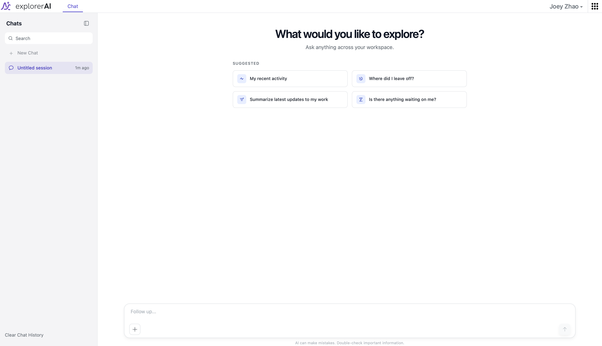
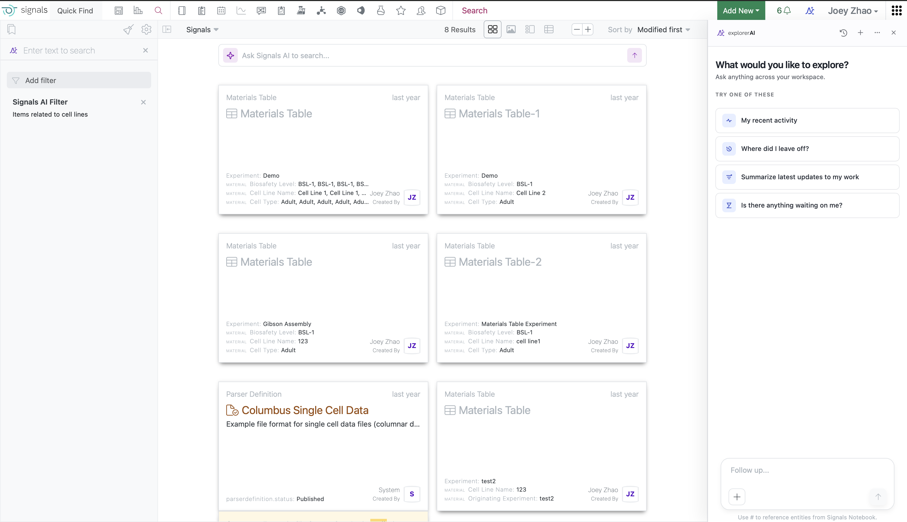
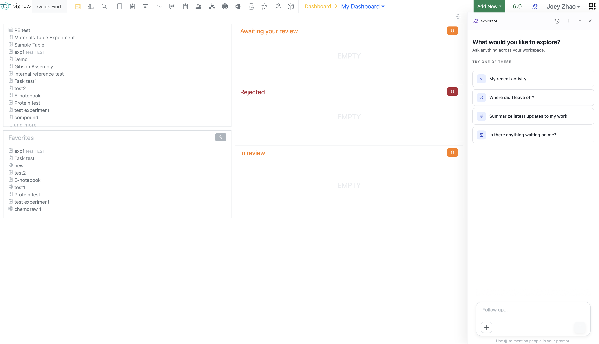
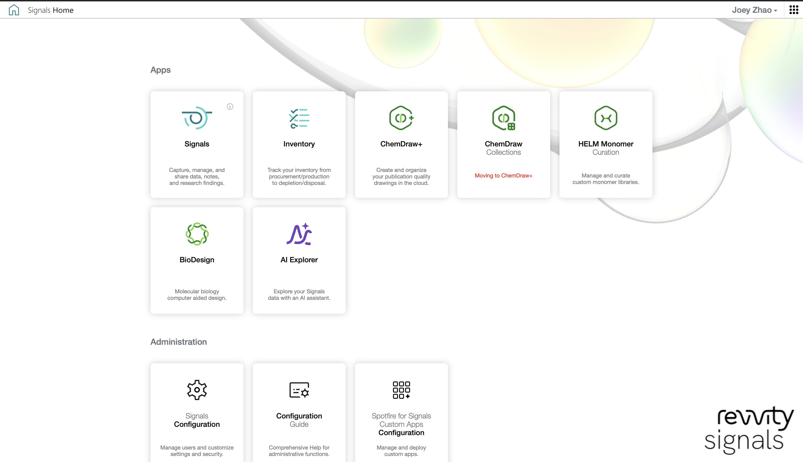

-66%
TASK CHECK谱系追溯：2 小时 → 40 分钟（任务测试）

01 / 13 · ORIGIN · 2021–2026
这个案例是我的两段作品。上半场（2021–2023）：我为全球药企设计了 Signals Notebook 的谱系可视化——让科学家看见材料的来历。下半场（2026）：我设计了 Signals AI——Revvity Signals 平台的原生智能体框架，让研发团队用一句自然语言检索、理解并行动于自己多年的实验数据。本页所有产品截图与设计稿均来自真实产品。
查看公开产品页 →02 / BEFORE AI
Signals Notebook 是全球 10,000+ 科学团队使用的电子实验本（ELN）：通过 API 连接 ChemDraw、Spotfire 与实验室仪器，每年支撑超过 100 万个工作流。Pfizer、Roche、Novartis、强生、Moderna、Merck、GSK、阿斯利康、拜耳的研发记录每天都在上面流动——这是任务关键级的软件，设计失误的代价以小时和合规风险计。
作为 Sr. Product Designer，我负责谱系工作流的端到端设计。这段经历教会我一件事：在受监管的科学环境里，科学家如何信任一块屏幕——这个问题，五年后成了 Signals AI 的核心命题。
MY RESPONSIBILITIES
谱系工作流端到端设计：研究综合、信息架构、线框图、原型、可用性测试、工程交接，以及与 PM/工程的对齐
TEAM
我（Sr. Product Designer）+ 1 名产品经理 + 10 名开发工程师
TIMELINE
约 5 个月核心设计，2021 年起随产品持续迭代
TOOLS
Figma · Jira · Confluence · Miro
-66%
TASK CHECK谱系追溯：2 小时 → 40 分钟（任务测试）
+20%
NPS25 → 30，发布后脉搏调研
$100M+
ANNUAL REVENUE所在产品线的年收入量级
1M+
WORKFLOWS每年在平台上运行的工作流
测量边界：-66% 与 NPS 来自任务测试与发布后调研，测量的是谱系追溯工作流本身，不代表设计单独改变了产品的全部表现；NPS 与营收数字描述的是发布后与产品的整体语境。设计贡献最清晰体现在发现、定向与导出所需的步骤减少上。
03 / THE CHALLENGE
对头部药企一线研究者的用户访谈，收敛出四个反复出现的痛点：
PAIN 01
谱系数据散落在不同实验、工具与格式里——拼出一段完整的历史既费时又容易出错。
PAIN 02
生物材料（细胞系、蛋白质、抗体、病毒载体）有多层的父子关系，现有工具无法清晰可视化。
PAIN 03
研究体量增长后，系统在大型数据集与实时协作上开始吃力。
PAIN 04
当时的可视化工具是为数据科学家设计的，而需要快速答案的是一线科学家。
04 / THE LANDSCAPE
✓ 为模式生物提供简单、可交互的谱系追踪
✗ 无法扩展到复杂的生物制剂工作流
✓ 灵活的数据集成与谱系表格
✗ 实时协作与大数据集上表现较弱
✓ 扎实的细胞系谱系与合规能力
✗ 界面对非技术用户过于复杂
05 / THE DECISION
所有竞品都默认表格视图。但访谈显示科学家用关系而非行来思考。我把交互式谱系地图设为主视图、表格降为辅助——匹配他们真实的建模方式。任务测试中，追溯时间缩短 66%：用户不再需要从扁平数据里在脑中重建层级。设计贡献最明显地体现在发现、定向与导出就绪三个环节。
影响力：最难的不是让团队相信谱系重要，而是让 PM 和工程相信「地图优先」能落进一个合规至上的企业产品。我把提案重构成低风险的工作流变更而非视觉实验：保留智能文件夹用于发现、把图谱放进独立的 Lineage 标签页、保留表格/导出用于审计、绝不强迫用户进入新的信息架构。这个折中给了 PM 更干净的边界，给了工程一条可构建的路径。
纯表格方案构建风险更低，但保留了核心的认知负担：科学家仍要手动重建父子关系。
大型材料图谱可能变得不可读且渲染昂贵，因此采用渐进式探索，而非一次性暴露全部关系。
跨产品谱系保留为方向，v1 聚焦 Materials 智能文件夹、Lineage 标签页、表格支撑与导出就绪。
06 / THE WORKFLOW
我设计的完整工作流，让科学家以秒级而不是小时级追溯谱系：
1
Materials 智能文件夹
2
选择材料
3
进入 Lineage 标签页
4
查看地图与表格
5
配置与导出


所有材料类型（细胞系、蛋白质、抗体、病毒载体）的统一视图，集中在一个可搜索、可筛选的界面里。科学家现在几秒钟就能找到任何材料。
父子关系的可视化呈现，清晰区分资产层（黑色节点）与批次层（橙色节点）。点击即可展开、折叠、探索关系。
为偏好数据网格的用户保留的表格形态：支持排序、筛选与批量导出到 Excel/PDF，用于合规文档。
与 Signals Inventa、BioDesign 无缝集成——科学家可以跨实验、跨项目、甚至跨产品线追溯谱系。
企业级 B2B 设计不是消费级设计。用户不喜欢你的界面也换不掉竞品——他们被多年的合同锁定。所以每一个摩擦点都会在数千名用户身上复利成小时的损失。谱系地图教会我：可视化不是为了聪明，是为了隐形。
07 / THE SHIFT
谱系项目回答的是「材料从哪来」。五年后，Signals AI 要回答的是更大的问题——「我的数据能告诉我什么」。2026 年 6 月 22 日，Signals AI 作为 Signals One 平台的原生智能体框架（native agentic framework）公开发布，官方定位是把科学软件「从记录系统变成理解系统」。摆在设计面前的，仍是两条被否决的老路：
上市最快。但科学家要离开实验记录、切到新窗口提问——回答与数据脱钩，没人敢把结论写回受监管的实验记录。
渐进稳妥，却延续旧世界。Revvity Signals 总裁 Kevin Willoe 的原话：「几十年来，科学软件把信息锁进预定义的应用、工作流和仪表盘。」
Signals AI 作为 Signals One 的原生智能体层：停靠在科学家已有界面里，回答落在本体论与结构化实验数据上，可溯源、可执行。代价：信任必须做进信息架构，而不是写在免责声明里。
08 / TRUST
受监管的研发环境里，一个编造的回答可能作废一条实验线。所以「可信」在 Signals AI 里不是营销文案，是我拆进界面里的四层结构——每一层都看得见、点得开、可检验。

截图里正在发生的事：一句「和细胞系相关的条目」变成左上角可见的 AI 筛选器——AI 动了什么，一目了然、可撤销；每张结果卡携带实验类型、状态、创建者与日期，点开即达原始记录。回答不是凭空生成的，是从你自己的实验里长出来的。
校准的信任从第一屏开始：不装全知，把核验写进默认视图。这句话就在本页开头那张截图的输入框下方——它不是法务要求我加的，是设计里最早确定的文案之一。
09 / SYSTEM
Signals One 是 Revvity Signals 的统一云原生研发平台。Signals AI 不是外挂，是它的原生智能体框架——科学家过去十年录入的实验，第一次可以用一句话直接对话。
按含义检索多年实验数据，不是关键词匹配。
把成堆的记录压成可核验的摘要，来源可点开。
用一句话描述，找到当时的实验图像。
与最强模型伙伴共建——首发 Claude，2026.07 官宣 MCP 集成。

explorer AI 停靠在 Notebook 仪表盘右侧，不抢走工作台。四张建议提问卡直连科学家此刻的真实处境——「我最近做了什么」「上次进行到哪了」「有什么在等我处理」。AI 出现在工作发生的地方，而不是又一个要切换的标签页。
10 / SHOWCASE
AI Explorer 不以独立产品的姿态出现，而是 Signals 套件应用阵容的一员——与 Notebook、Inventory、BioDesign 并肩。它叫「Explorer」而不是「Copilot」：定位是帮你探索自己的数据，不是替你做科学。

Signals Home 的应用宫格里，AI Explorer 与实验记录、库存、BioDesign 平级陈列——它是工作台的一部分，不是附加的魔法。页面下半部分的 Administration 卡片提醒着这个环境的另一半真相：权限、治理与企业合规。AI 必须在这一切之内工作，而不是之外。
产品页、发布新闻稿与 Claude 合作公告全部可公开访问；本页四张界面截图截自同一演示工作区的真实产品。
以上是公开可查的产品事实。设计过程、内部迭代与我的角色细节，属于第一人称叙述。
11 / THE BOUNDARY
这个页面混着两种材料，我把线画清楚。外部事实——Signals AI 于 2026 年 6 月 22 日公开发布，产品页与新闻稿任何人可查，Claude 集成 2026 年 7 月官宣——都可以点开验证。第一人称叙述——对话界面与信任栈的设计过程、我的角色与团队协作——无法用公开材料独立核验，你只能选择信或不信我的版本。产品刚发布，我不会编造采用率或留存数字；-66% 是上半场谱系工作的任务测试结果，量的是当时的工作流，不是今天的 AI。下半场截图来自演示工作区，没有一行客户数据。
「企业级 AI 的作品集，应该像它回答问题的方式一样：句句可溯源。」
PUBLIC EVIDENCE · 2026.06.22 LAUNCH / 2026.07 CLAUDE × MCP / DEMO-WORKSPACE SCREENSHOTS
12 / MY ROLE
五年里我负责两件事。上半场：Signals Notebook 谱系工作流的端到端设计——研究综合、信息架构、线框图、原型、可用性测试、工程交接。下半场：Signals AI 的体验层——对话界面的交互模型、语义搜索的结果呈现、自然语言筛选器、溯源与信任的信息架构，以及 AI 在 Signals 套件中的入口与嵌入方式。
角色边界：我没有独自造出这些产品——谱系工作流的优先级与发布节奏由我和 PM、工程共同决策；Signals AI 的模型能力、本体论架构与平台工程由专门团队负责。我的边界一直在体验层：科学家在哪里遇见工具、怎样提问、答案如何自证清白。这句话同样适用于这个页面上所有关于设计的叙述。
13 / LIVE
Signals AI 已随 Signals One 平台公开发布。右侧每一条证据你都可以自己点开验证——这也是这个案例本身想示范的事。